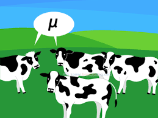

Shelby Lamm
Current Program:
Statistics Masters at NAU
Brain Injury Alliance of Arizona
Phoenix Business Journal

\[ \mu=\frac{\sum_{i=1}^N x_i}{N} \].
Quadratic Formula: \(x=\frac{-b\pm\sqrt{b^2-4ac}}{2a} \).